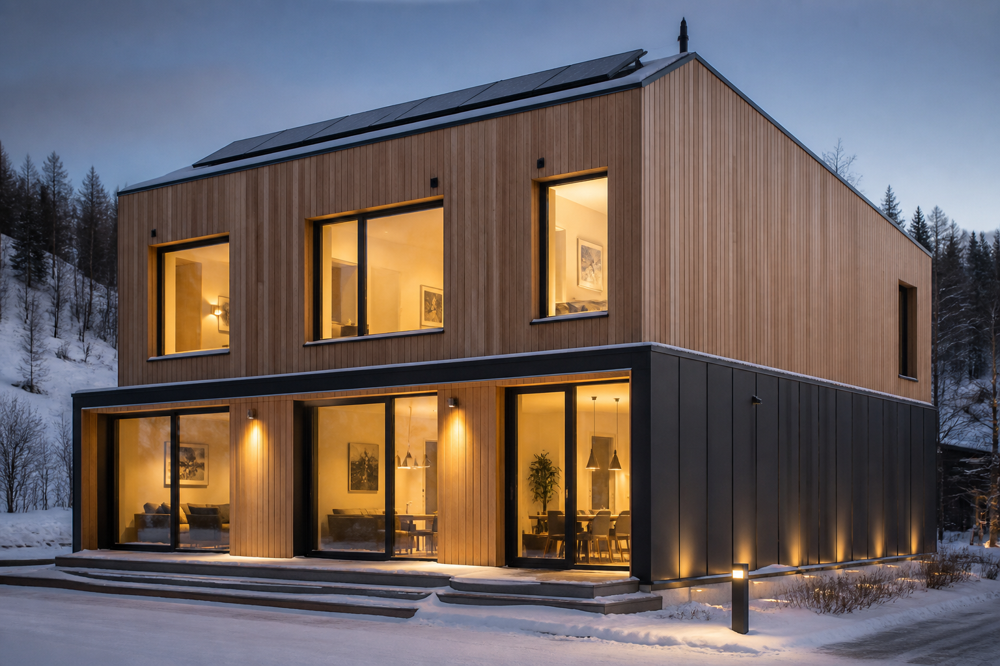

Three Rivers Passive House: aspirational Cross-Laminated Timber courtyard living
A Wallpaper* cover home in Rickmansworth, Hertfordshire—fabric-first Passive House–aligned design by Gbolade Design Studio. I’m filing it for Cross-Laminated Timber (CLT) storytelling, not as a Virginia cost analogue, and not as a Passive House Institute (PHI) or Passive House Institute US (Phius) certificate I could verify.

ExtraReach is still in the planning stage. Most weeks that means standards, incentives, and Mid-Atlantic case studies. Some weeks a cover story lands that is worth pinning for story—how mass timber, courtyard living, and fabric-first detailing show up in press—even when the project is the wrong scale and climate for a Virginia cost sketch.
Three Rivers Passive House is that kind of pin. Ellie Stathaki’s Wallpaper* piece (13 September 2026) covers a roughly 5,005 square-foot, five-bedroom courtyard new-build in Rickmansworth by London’s Gbolade Design Studio (Tara and Lanre Gbolade). It replaces a bungalow on a sloping suburban valley site, with Belgian long-format brick, smoke-grey charred larch, and a West African compound–inspired courtyard plan.
What it is (and what it isn’t)
The architects describe a fabric-first passive house design approach: airtight off-site Cross-Laminated Timber (CLT) and Glulam superstructure, high-performance insulation, and renewable plant—air-source heat pumps (ASHP), mechanical ventilation with heat recovery (MVHR), and rooftop photovoltaics (PV).
Performance numbers on the studio site (architect claims): wall and roof U-values around 0.11, ground floor around 0.07; three ASHPs; 39 PV modules / 18.52 kWp; sedum roofs; and a claimed net-positive energy use intensity (EUI) of about −6.44 kWh/m²·yr, framed against Royal Institute of British Architects (RIBA 2030 Climate Challenge embodied-carbon and operational-energy targets.
What I could not find in the public coverage Nicole and I checked: a published PHI or Phius certificate for this address. Same rule as Virginia tour notes—call it Passive House–aligned / design-standard until a certificate shows up, not “certified Passive House” in ExtraReach copy.
Strong CLT residential storytelling and courtyard multi-gen planning language. Label it design-standard / PH-aligned, not certified—same discipline as VA tours.
Why it still belongs on the Resources shelf
ExtraReach has been chewing on mass timber’s pros and cons for a Mid-Atlantic residential plan. Three Rivers is a clean public example of off-site CLT + Glulam paired with a fabric-first envelope story and all-electric plant—the kind of narrative clients and readers already see in design press.
The program is also explicit about multi-generational living: a ground-floor senior-living guest suite that can run as a more independent unit, plus shared courtyard-facing living, kitchen, pool, gym, and sauna. Useful for ExtraReach’s long “how families actually want to live” notes—even when the amenity stack is luxury UK suburb, not Loudoun County budget.
Use Three Rivers for CLT + courtyard vision language. Do not use the pool/gym/sauna package—or UK square-footage and plant counts—as a Virginia cost or mechanicals analogue.
What I’m carrying forward
Three practical moves from this note:
- Keep Three Rivers on the ExtraReach Resources shelf as an aspirational CLT / courtyard case study with the PH-aligned (not certified) flag attached.
- When writing about mass timber for ExtraReach, cite the fabric-first + ASHP + MVHR + PV stack as press-visible precedent—not as a certified PHI/Phius pin.
- Keep Virginia tours and Mid-Atlantic certified projects as the cost and detailing references; luxury UK courtyard homes stay in the “vision” lane.
That’s enough for a Resources note. The house ExtraReach builds still has to earn its numbers in Climate Zone 4A physics, local trades, and documents you can verify—not Wallpaper* alone.
Sources
- Wallpaper* — Ellie Stathaki, Three Rivers Passive House by Gbolade Design Studio (13 September 2026)
-
Gbolade Design Studio — Three Rivers Passive House project page (performance claims)
Architect-published U-values, plant counts, and EUI; not a substitute for a PHI/Phius certificate.